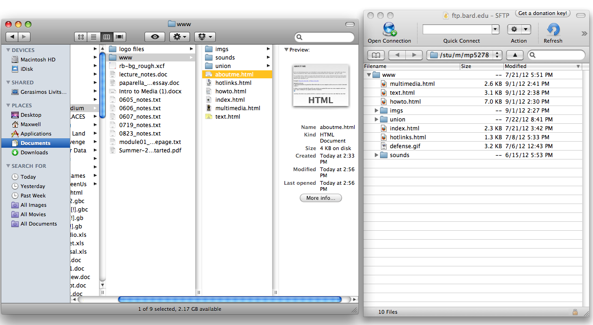

ABOUT ME
For your first homepage project, you will embed 5 or more media objects that will act as an "About Me" page. These objects can include text, video, sound, and animation, but must include at least 3 image files-- .jpg, .gif, or .png.
You can think of this as similar in concept to those fill-in-the-blank "info" sections offered by Facebook and other online social networks, but this one is more flexible in terms of how you wish to describe yourself. Use any media you'd like to illustrate what's important to you. As you choose which types of media to include, consider your desired effect on your audience. e.g. What can a video do that an image cannot? (And vice-versa.)
Examples: Maxwell's About Me and Maria's About Me
IMPORTANT!
The media you use for this assignment and everything else on your homepage should be organized into files both locally (on your computer) and on your server (in the Cyberduck window.)
Below, you can see that the files used for my website are organized the same way on my computer and on my server space, making for easy updates and fewer headaches.

As always, if you have any questions feel free to email me at mp5278 -dot- bard -dot- edu. Otherwise, have fun!